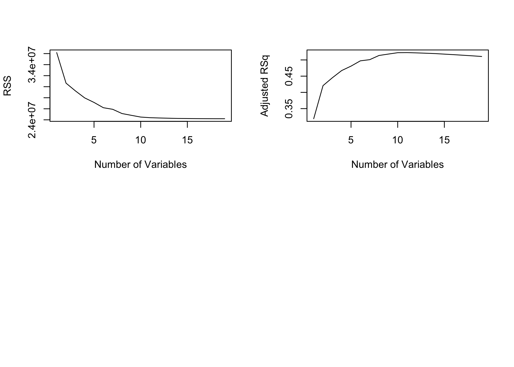
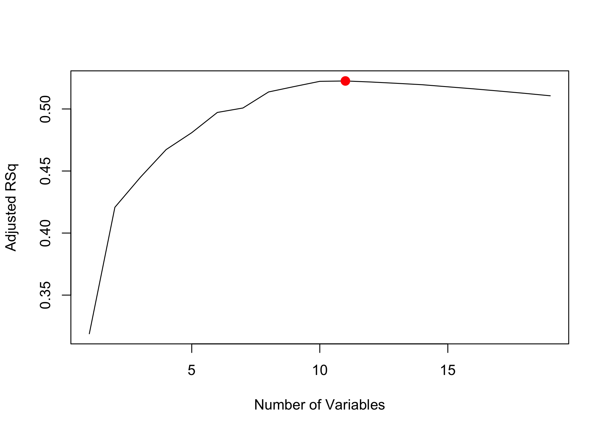
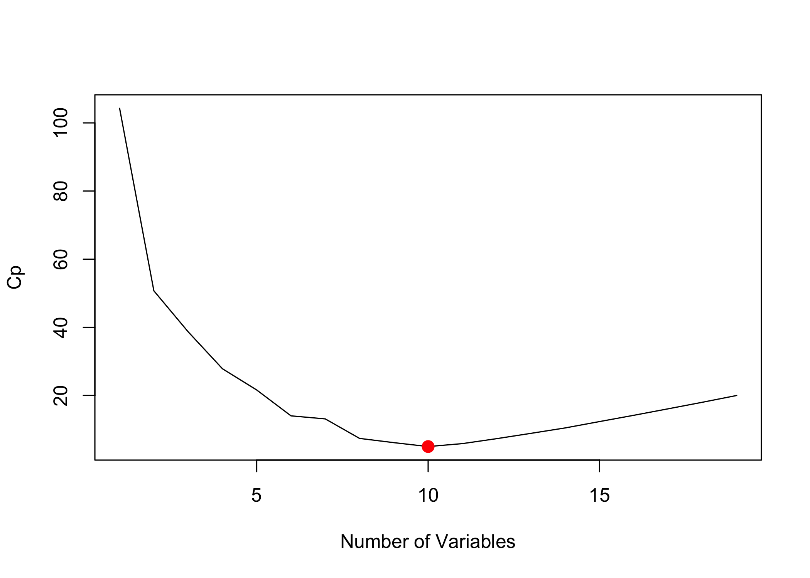
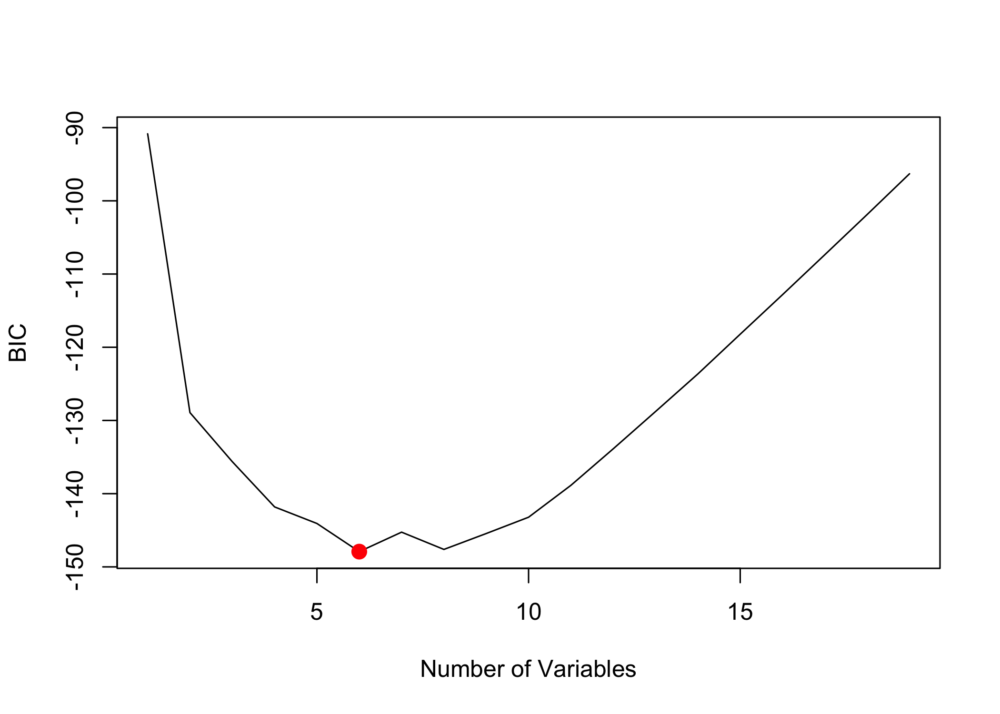
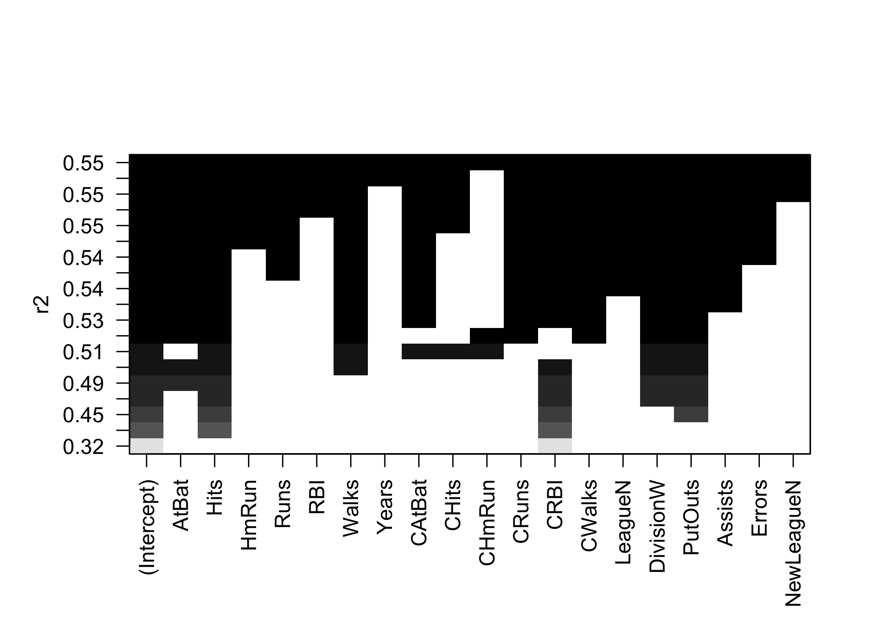
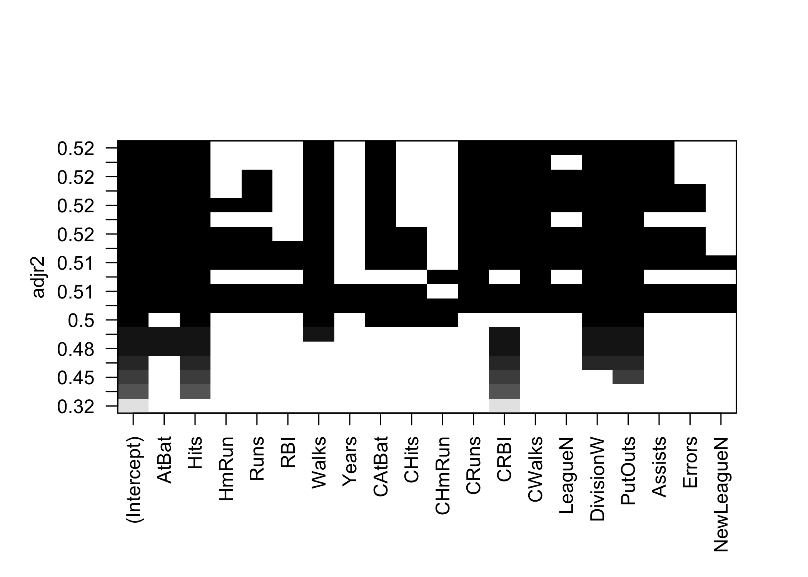
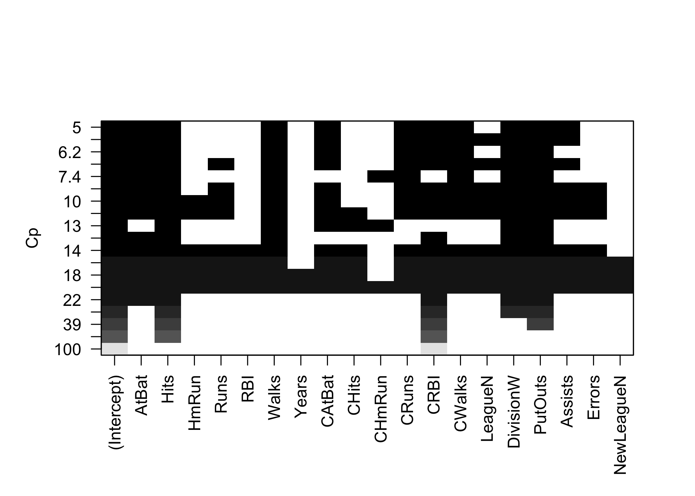
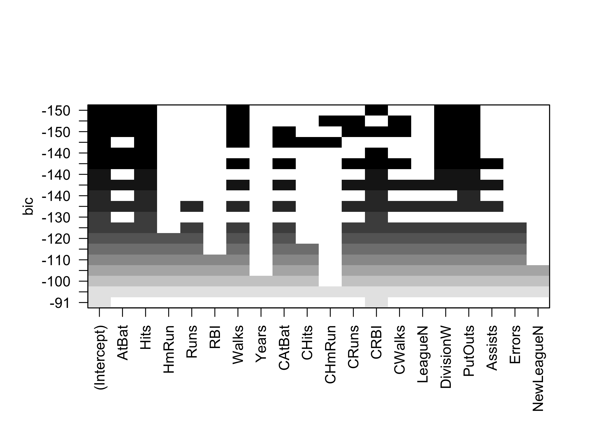
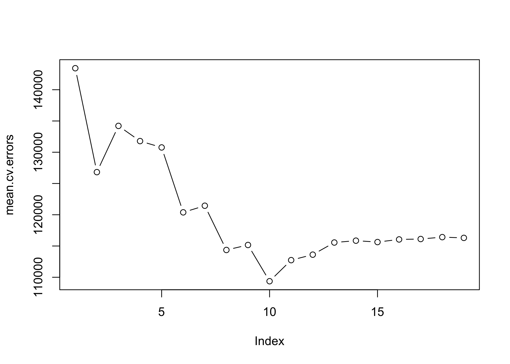

Call:
lm(formula = medv ~ lstat + age, data = Boston)
Residuals:
Min 1Q Median 3Q Max
-15.981 -3.978 -1.283 1.968 23.158
Coefficients:
Estimate Std. Error t value Pr(>|t|)
(Intercept) 33.22276 0.73085 45.458 < 2e-16 ***
lstat -1.03207 0.04819 -21.416 < 2e-16 ***
age 0.03454 0.01223 2.826 0.00491 **
---
Signif. codes: 0 '***' 0.001 '**' 0.01 '*' 0.05 '.' 0.1 ' ' 1
Residual standard error: 6.173 on 503 degrees of freedom
Multiple R-squared: 0.5513, Adjusted R-squared: 0.5495
F-statistic: 309 on 2 and 503 DF, p-value: < 2.2e-16Lab 3
Introduction to Statistical Learning - PISE
Linear Regression
Multiple Linear Regression
- Fit multiple regression models with the
lm()function
- Syntax:
lm(y ~ x1 + x2 + x3, data = ...)
- To use all predictors, write
.as shorthand
Call:
lm(formula = medv ~ ., data = Boston)
Residuals:
Min 1Q Median 3Q Max
-15.595 -2.730 -0.518 1.777 26.199
Coefficients:
Estimate Std. Error t value Pr(>|t|)
(Intercept) 3.646e+01 5.103e+00 7.144 3.28e-12 ***
crim -1.080e-01 3.286e-02 -3.287 0.001087 **
zn 4.642e-02 1.373e-02 3.382 0.000778 ***
indus 2.056e-02 6.150e-02 0.334 0.738288
chas 2.687e+00 8.616e-01 3.118 0.001925 **
nox -1.777e+01 3.820e+00 -4.651 4.25e-06 ***
rm 3.810e+00 4.179e-01 9.116 < 2e-16 ***
age 6.922e-04 1.321e-02 0.052 0.958229
dis -1.476e+00 1.995e-01 -7.398 6.01e-13 ***
rad 3.060e-01 6.635e-02 4.613 5.07e-06 ***
tax -1.233e-02 3.760e-03 -3.280 0.001112 **
ptratio -9.527e-01 1.308e-01 -7.283 1.31e-12 ***
black 9.312e-03 2.686e-03 3.467 0.000573 ***
lstat -5.248e-01 5.072e-02 -10.347 < 2e-16 ***
---
Signif. codes: 0 '***' 0.001 '**' 0.01 '*' 0.05 '.' 0.1 ' ' 1
Residual standard error: 4.745 on 492 degrees of freedom
Multiple R-squared: 0.7406, Adjusted R-squared: 0.7338
F-statistic: 108.1 on 13 and 492 DF, p-value: < 2.2e-16- Components of the summary object can be extracted by name
- Examples:
summary(lm.fit)$r.sqsummary(lm.fit)$sigma
vif()from thecarpackage computes variance inflation factors
- VIFs help assess multicollinearity
Loading required package: carData crim zn indus chas nox rm age dis
1.792192 2.298758 3.991596 1.073995 4.393720 1.933744 3.100826 3.955945
rad tax ptratio black lstat
7.484496 9.008554 1.799084 1.348521 2.941491 - Exclude one predictor using
-in the formula
- Example: remove
age
Call:
lm(formula = medv ~ . - age, data = Boston)
Residuals:
Min 1Q Median 3Q Max
-15.6054 -2.7313 -0.5188 1.7601 26.2243
Coefficients:
Estimate Std. Error t value Pr(>|t|)
(Intercept) 36.436927 5.080119 7.172 2.72e-12 ***
crim -0.108006 0.032832 -3.290 0.001075 **
zn 0.046334 0.013613 3.404 0.000719 ***
indus 0.020562 0.061433 0.335 0.737989
chas 2.689026 0.859598 3.128 0.001863 **
nox -17.713540 3.679308 -4.814 1.97e-06 ***
rm 3.814394 0.408480 9.338 < 2e-16 ***
dis -1.478612 0.190611 -7.757 5.03e-14 ***
rad 0.305786 0.066089 4.627 4.75e-06 ***
tax -0.012329 0.003755 -3.283 0.001099 **
ptratio -0.952211 0.130294 -7.308 1.10e-12 ***
black 0.009321 0.002678 3.481 0.000544 ***
lstat -0.523852 0.047625 -10.999 < 2e-16 ***
---
Signif. codes: 0 '***' 0.001 '**' 0.01 '*' 0.05 '.' 0.1 ' ' 1
Residual standard error: 4.74 on 493 degrees of freedom
Multiple R-squared: 0.7406, Adjusted R-squared: 0.7343
F-statistic: 117.3 on 12 and 493 DF, p-value: < 2.2e-16- Alternatively, update an existing model with
update()
Interaction Terms
- Include interaction terms with
:
- Example:
lstat:age
- Use
*as shorthand for:- main effects
- interaction term
lstat * ageis shorthand for:lstat + age + lstat:age
Call:
lm(formula = medv ~ lstat * age, data = Boston)
Residuals:
Min 1Q Median 3Q Max
-15.806 -4.045 -1.333 2.085 27.552
Coefficients:
Estimate Std. Error t value Pr(>|t|)
(Intercept) 36.0885359 1.4698355 24.553 < 2e-16 ***
lstat -1.3921168 0.1674555 -8.313 8.78e-16 ***
age -0.0007209 0.0198792 -0.036 0.9711
lstat:age 0.0041560 0.0018518 2.244 0.0252 *
---
Signif. codes: 0 '***' 0.001 '**' 0.01 '*' 0.05 '.' 0.1 ' ' 1
Residual standard error: 6.149 on 502 degrees of freedom
Multiple R-squared: 0.5557, Adjusted R-squared: 0.5531
F-statistic: 209.3 on 3 and 502 DF, p-value: < 2.2e-16Qualitative Predictors
Carseatsis another dataset inISLR2
- Response variable:
Sales
- Predictors include both quantitative and qualitative variables
Attaching package: 'ISLR2'The following object is masked from 'package:MASS':
Boston Sales CompPrice Income Advertising Population Price ShelveLoc Age Education
1 9.50 138 73 11 276 120 Bad 42 17
2 11.22 111 48 16 260 83 Good 65 10
3 10.06 113 35 10 269 80 Medium 59 12
4 7.40 117 100 4 466 97 Medium 55 14
5 4.15 141 64 3 340 128 Bad 38 13
6 10.81 124 113 13 501 72 Bad 78 16
Urban US
1 Yes Yes
2 Yes Yes
3 Yes Yes
4 Yes Yes
5 Yes No
6 No YesShelveLocis a qualitative predictor
- Levels:
BadMediumGood
Rautomatically creates dummy variables for qualitative predictors
Call:
lm(formula = Sales ~ . + Income:Advertising + Price:Age, data = Carseats)
Residuals:
Min 1Q Median 3Q Max
-2.9208 -0.7503 0.0177 0.6754 3.3413
Coefficients:
Estimate Std. Error t value Pr(>|t|)
(Intercept) 6.5755654 1.0087470 6.519 2.22e-10 ***
CompPrice 0.0929371 0.0041183 22.567 < 2e-16 ***
Income 0.0108940 0.0026044 4.183 3.57e-05 ***
Advertising 0.0702462 0.0226091 3.107 0.002030 **
Population 0.0001592 0.0003679 0.433 0.665330
Price -0.1008064 0.0074399 -13.549 < 2e-16 ***
ShelveLocGood 4.8486762 0.1528378 31.724 < 2e-16 ***
ShelveLocMedium 1.9532620 0.1257682 15.531 < 2e-16 ***
Age -0.0579466 0.0159506 -3.633 0.000318 ***
Education -0.0208525 0.0196131 -1.063 0.288361
UrbanYes 0.1401597 0.1124019 1.247 0.213171
USYes -0.1575571 0.1489234 -1.058 0.290729
Income:Advertising 0.0007510 0.0002784 2.698 0.007290 **
Price:Age 0.0001068 0.0001333 0.801 0.423812
---
Signif. codes: 0 '***' 0.001 '**' 0.01 '*' 0.05 '.' 0.1 ' ' 1
Residual standard error: 1.011 on 386 degrees of freedom
Multiple R-squared: 0.8761, Adjusted R-squared: 0.8719
F-statistic: 210 on 13 and 386 DF, p-value: < 2.2e-16- Use
contrasts()to see the dummy-variable coding used byR
Use
?contrastsfor more informationHere:
ShelveLocGood = 1if location is good, 0 otherwiseShelveLocMedium = 1if location is medium, 0 otherwiseBadis the baseline category
Positive coefficients indicate higher sales relative to the baseline category
Writing Functions
Rincludes many built-in functions
We can also write our own functions when needed
Example: create a function
LoadLibraries()Before defining it, calling the function gives an error
Error: object 'LoadLibraries' not foundError in LoadLibraries(): could not find function "LoadLibraries"- Define the function with
function() { ... }
- The braces
{}contain the commands in the function body
- Typing the function name prints its definition
- Calling the function executes the commands
Best Subset Selection
Apply best subset selection to the
Hittersdata
Goal: predict a player’s
Salaryusing performance statistics from the previous yearSalaryhas missing values
is.na()identifies missing entries
sum()counts how many are missing
[1] "AtBat" "Hits" "HmRun" "Runs" "RBI" "Walks"
[7] "Years" "CAtBat" "CHits" "CHmRun" "CRuns" "CRBI"
[13] "CWalks" "League" "Division" "PutOuts" "Assists" "Errors"
[19] "Salary" "NewLeague"[1] 322 20[1] 59Salaryis missing for 59 players
na.omit()removes rows with missing values
regsubsets()from theleapspackage performs best subset selection
- It finds the best model of each size, where best means lowest RSS
summary()shows the selected variables for each model size
Subset selection object
Call: regsubsets.formula(Salary ~ ., Hitters)
19 Variables (and intercept)
Forced in Forced out
AtBat FALSE FALSE
Hits FALSE FALSE
HmRun FALSE FALSE
Runs FALSE FALSE
RBI FALSE FALSE
Walks FALSE FALSE
Years FALSE FALSE
CAtBat FALSE FALSE
CHits FALSE FALSE
CHmRun FALSE FALSE
CRuns FALSE FALSE
CRBI FALSE FALSE
CWalks FALSE FALSE
LeagueN FALSE FALSE
DivisionW FALSE FALSE
PutOuts FALSE FALSE
Assists FALSE FALSE
Errors FALSE FALSE
NewLeagueN FALSE FALSE
1 subsets of each size up to 8
Selection Algorithm: exhaustive
AtBat Hits HmRun Runs RBI Walks Years CAtBat CHits CHmRun CRuns CRBI
1 ( 1 ) " " " " " " " " " " " " " " " " " " " " " " "*"
2 ( 1 ) " " "*" " " " " " " " " " " " " " " " " " " "*"
3 ( 1 ) " " "*" " " " " " " " " " " " " " " " " " " "*"
4 ( 1 ) " " "*" " " " " " " " " " " " " " " " " " " "*"
5 ( 1 ) "*" "*" " " " " " " " " " " " " " " " " " " "*"
6 ( 1 ) "*" "*" " " " " " " "*" " " " " " " " " " " "*"
7 ( 1 ) " " "*" " " " " " " "*" " " "*" "*" "*" " " " "
8 ( 1 ) "*" "*" " " " " " " "*" " " " " " " "*" "*" " "
CWalks LeagueN DivisionW PutOuts Assists Errors NewLeagueN
1 ( 1 ) " " " " " " " " " " " " " "
2 ( 1 ) " " " " " " " " " " " " " "
3 ( 1 ) " " " " " " "*" " " " " " "
4 ( 1 ) " " " " "*" "*" " " " " " "
5 ( 1 ) " " " " "*" "*" " " " " " "
6 ( 1 ) " " " " "*" "*" " " " " " "
7 ( 1 ) " " " " "*" "*" " " " " " "
8 ( 1 ) "*" " " "*" "*" " " " " " " - An asterisk indicates that a variable is included in the model
- By default, output is shown only up to 8 predictors
- Use
nvmaxto increase the maximum model size
summary()also returns:R^2- RSS
- adjusted
R^2 C_p- BIC
R^2increases as more variables are added
[1] 0.3214501 0.4252237 0.4514294 0.4754067 0.4908036 0.5087146 0.5141227
[8] 0.5285569 0.5346124 0.5404950 0.5426153 0.5436302 0.5444570 0.5452164
[15] 0.5454692 0.5457656 0.5459518 0.5460945 0.5461159- Plot RSS and adjusted
R^2across model sizes
type = "l"connects the points with lines
par(mfrow = c(2, 2))
plot(reg.summary$rss, xlab = "Number of Variables",
ylab = "RSS", type = "l")
plot(reg.summary$adjr2, xlab = "Number of Variables",
ylab = "Adjusted RSq", type = "l")
points()adds points to an existing plot
which.max()identifies the location of the maximum value
- Mark the model with the largest adjusted
R^2
[1] 11plot(reg.summary$adjr2, xlab = "Number of Variables",
ylab = "Adjusted RSq", type = "l")
points(11, reg.summary$adjr2[11], col = "red", cex = 2,
pch = 20)
- Use
which.min()to identify the best model byC_pand BIC
plot(reg.summary$cp, xlab = "Number of Variables",
ylab = "Cp", type = "l")
which.min(reg.summary$cp)[1] 10
[1] 6plot(reg.summary$bic, xlab = "Number of Variables",
ylab = "BIC", type = "l")
points(6, reg.summary$bic[6], col = "red", cex = 2,
pch = 20)
plot.regsubsets()displays selected variables by model size
- Models can be ranked by:
r2adjr2Cpbic




- Use
coef()to inspect coefficients for a chosen model
- Example: the 6-variable model
Forward and Backward Stepwise Selection
regsubsets()can also perform:- forward stepwise selection
- backward stepwise selection
- Use
method = "forward"ormethod = "backward"
regfit.fwd <- regsubsets(Salary ~ ., data = Hitters,
nvmax = 19, method = "forward")
summary(regfit.fwd)Subset selection object
Call: regsubsets.formula(Salary ~ ., data = Hitters, nvmax = 19, method = "forward")
19 Variables (and intercept)
Forced in Forced out
AtBat FALSE FALSE
Hits FALSE FALSE
HmRun FALSE FALSE
Runs FALSE FALSE
RBI FALSE FALSE
Walks FALSE FALSE
Years FALSE FALSE
CAtBat FALSE FALSE
CHits FALSE FALSE
CHmRun FALSE FALSE
CRuns FALSE FALSE
CRBI FALSE FALSE
CWalks FALSE FALSE
LeagueN FALSE FALSE
DivisionW FALSE FALSE
PutOuts FALSE FALSE
Assists FALSE FALSE
Errors FALSE FALSE
NewLeagueN FALSE FALSE
1 subsets of each size up to 19
Selection Algorithm: forward
AtBat Hits HmRun Runs RBI Walks Years CAtBat CHits CHmRun CRuns CRBI
1 ( 1 ) " " " " " " " " " " " " " " " " " " " " " " "*"
2 ( 1 ) " " "*" " " " " " " " " " " " " " " " " " " "*"
3 ( 1 ) " " "*" " " " " " " " " " " " " " " " " " " "*"
4 ( 1 ) " " "*" " " " " " " " " " " " " " " " " " " "*"
5 ( 1 ) "*" "*" " " " " " " " " " " " " " " " " " " "*"
6 ( 1 ) "*" "*" " " " " " " "*" " " " " " " " " " " "*"
7 ( 1 ) "*" "*" " " " " " " "*" " " " " " " " " " " "*"
8 ( 1 ) "*" "*" " " " " " " "*" " " " " " " " " "*" "*"
9 ( 1 ) "*" "*" " " " " " " "*" " " "*" " " " " "*" "*"
10 ( 1 ) "*" "*" " " " " " " "*" " " "*" " " " " "*" "*"
11 ( 1 ) "*" "*" " " " " " " "*" " " "*" " " " " "*" "*"
12 ( 1 ) "*" "*" " " "*" " " "*" " " "*" " " " " "*" "*"
13 ( 1 ) "*" "*" " " "*" " " "*" " " "*" " " " " "*" "*"
14 ( 1 ) "*" "*" "*" "*" " " "*" " " "*" " " " " "*" "*"
15 ( 1 ) "*" "*" "*" "*" " " "*" " " "*" "*" " " "*" "*"
16 ( 1 ) "*" "*" "*" "*" "*" "*" " " "*" "*" " " "*" "*"
17 ( 1 ) "*" "*" "*" "*" "*" "*" " " "*" "*" " " "*" "*"
18 ( 1 ) "*" "*" "*" "*" "*" "*" "*" "*" "*" " " "*" "*"
19 ( 1 ) "*" "*" "*" "*" "*" "*" "*" "*" "*" "*" "*" "*"
CWalks LeagueN DivisionW PutOuts Assists Errors NewLeagueN
1 ( 1 ) " " " " " " " " " " " " " "
2 ( 1 ) " " " " " " " " " " " " " "
3 ( 1 ) " " " " " " "*" " " " " " "
4 ( 1 ) " " " " "*" "*" " " " " " "
5 ( 1 ) " " " " "*" "*" " " " " " "
6 ( 1 ) " " " " "*" "*" " " " " " "
7 ( 1 ) "*" " " "*" "*" " " " " " "
8 ( 1 ) "*" " " "*" "*" " " " " " "
9 ( 1 ) "*" " " "*" "*" " " " " " "
10 ( 1 ) "*" " " "*" "*" "*" " " " "
11 ( 1 ) "*" "*" "*" "*" "*" " " " "
12 ( 1 ) "*" "*" "*" "*" "*" " " " "
13 ( 1 ) "*" "*" "*" "*" "*" "*" " "
14 ( 1 ) "*" "*" "*" "*" "*" "*" " "
15 ( 1 ) "*" "*" "*" "*" "*" "*" " "
16 ( 1 ) "*" "*" "*" "*" "*" "*" " "
17 ( 1 ) "*" "*" "*" "*" "*" "*" "*"
18 ( 1 ) "*" "*" "*" "*" "*" "*" "*"
19 ( 1 ) "*" "*" "*" "*" "*" "*" "*" regfit.bwd <- regsubsets(Salary ~ ., data = Hitters,
nvmax = 19, method = "backward")
summary(regfit.bwd)Subset selection object
Call: regsubsets.formula(Salary ~ ., data = Hitters, nvmax = 19, method = "backward")
19 Variables (and intercept)
Forced in Forced out
AtBat FALSE FALSE
Hits FALSE FALSE
HmRun FALSE FALSE
Runs FALSE FALSE
RBI FALSE FALSE
Walks FALSE FALSE
Years FALSE FALSE
CAtBat FALSE FALSE
CHits FALSE FALSE
CHmRun FALSE FALSE
CRuns FALSE FALSE
CRBI FALSE FALSE
CWalks FALSE FALSE
LeagueN FALSE FALSE
DivisionW FALSE FALSE
PutOuts FALSE FALSE
Assists FALSE FALSE
Errors FALSE FALSE
NewLeagueN FALSE FALSE
1 subsets of each size up to 19
Selection Algorithm: backward
AtBat Hits HmRun Runs RBI Walks Years CAtBat CHits CHmRun CRuns CRBI
1 ( 1 ) " " " " " " " " " " " " " " " " " " " " "*" " "
2 ( 1 ) " " "*" " " " " " " " " " " " " " " " " "*" " "
3 ( 1 ) " " "*" " " " " " " " " " " " " " " " " "*" " "
4 ( 1 ) "*" "*" " " " " " " " " " " " " " " " " "*" " "
5 ( 1 ) "*" "*" " " " " " " "*" " " " " " " " " "*" " "
6 ( 1 ) "*" "*" " " " " " " "*" " " " " " " " " "*" " "
7 ( 1 ) "*" "*" " " " " " " "*" " " " " " " " " "*" " "
8 ( 1 ) "*" "*" " " " " " " "*" " " " " " " " " "*" "*"
9 ( 1 ) "*" "*" " " " " " " "*" " " "*" " " " " "*" "*"
10 ( 1 ) "*" "*" " " " " " " "*" " " "*" " " " " "*" "*"
11 ( 1 ) "*" "*" " " " " " " "*" " " "*" " " " " "*" "*"
12 ( 1 ) "*" "*" " " "*" " " "*" " " "*" " " " " "*" "*"
13 ( 1 ) "*" "*" " " "*" " " "*" " " "*" " " " " "*" "*"
14 ( 1 ) "*" "*" "*" "*" " " "*" " " "*" " " " " "*" "*"
15 ( 1 ) "*" "*" "*" "*" " " "*" " " "*" "*" " " "*" "*"
16 ( 1 ) "*" "*" "*" "*" "*" "*" " " "*" "*" " " "*" "*"
17 ( 1 ) "*" "*" "*" "*" "*" "*" " " "*" "*" " " "*" "*"
18 ( 1 ) "*" "*" "*" "*" "*" "*" "*" "*" "*" " " "*" "*"
19 ( 1 ) "*" "*" "*" "*" "*" "*" "*" "*" "*" "*" "*" "*"
CWalks LeagueN DivisionW PutOuts Assists Errors NewLeagueN
1 ( 1 ) " " " " " " " " " " " " " "
2 ( 1 ) " " " " " " " " " " " " " "
3 ( 1 ) " " " " " " "*" " " " " " "
4 ( 1 ) " " " " " " "*" " " " " " "
5 ( 1 ) " " " " " " "*" " " " " " "
6 ( 1 ) " " " " "*" "*" " " " " " "
7 ( 1 ) "*" " " "*" "*" " " " " " "
8 ( 1 ) "*" " " "*" "*" " " " " " "
9 ( 1 ) "*" " " "*" "*" " " " " " "
10 ( 1 ) "*" " " "*" "*" "*" " " " "
11 ( 1 ) "*" "*" "*" "*" "*" " " " "
12 ( 1 ) "*" "*" "*" "*" "*" " " " "
13 ( 1 ) "*" "*" "*" "*" "*" "*" " "
14 ( 1 ) "*" "*" "*" "*" "*" "*" " "
15 ( 1 ) "*" "*" "*" "*" "*" "*" " "
16 ( 1 ) "*" "*" "*" "*" "*" "*" " "
17 ( 1 ) "*" "*" "*" "*" "*" "*" "*"
18 ( 1 ) "*" "*" "*" "*" "*" "*" "*"
19 ( 1 ) "*" "*" "*" "*" "*" "*" "*" - Best subset, forward, and backward selection may agree for small models
- They can differ for larger models
(Intercept) Hits Walks CAtBat CHits CHmRun
79.4509472 1.2833513 3.2274264 -0.3752350 1.4957073 1.4420538
DivisionW PutOuts
-129.9866432 0.2366813 (Intercept) AtBat Hits Walks CRBI CWalks
109.7873062 -1.9588851 7.4498772 4.9131401 0.8537622 -0.3053070
DivisionW PutOuts
-127.1223928 0.2533404 (Intercept) AtBat Hits Walks CRuns CWalks
105.6487488 -1.9762838 6.7574914 6.0558691 1.1293095 -0.7163346
DivisionW PutOuts
-116.1692169 0.3028847 Choosing Among Models Using the Validation-Set Approach and Cross-Validation
Model size can also be selected using:
- validation set
- cross-validation
Important: all model-fitting steps must use only the training data
Variable selection must also be performed within the training set
Create a training/test split
trainisTRUEfor training observations
testisTRUEfor test observations
- Perform best subset selection on the training data only
- Build a model matrix for the test data
- Compute validation error for each model size
- For each
i:- extract coefficients
- compute predictions
- compute test MSE
- Select the model with the smallest validation error
[1] 164377.3 144405.5 152175.7 145198.4 137902.1 139175.7 126849.0 136191.4
[9] 132889.6 135434.9 136963.3 140694.9 140690.9 141951.2 141508.2 142164.4
[17] 141767.4 142339.6 142238.2[1] 7 (Intercept) AtBat Hits Walks CRuns CWalks
67.1085369 -2.1462987 7.0149547 8.0716640 1.2425113 -0.8337844
DivisionW PutOuts
-118.4364998 0.2526925 regsubsets()has no built-inpredict()method
- Define a custom prediction function for reuse
- Refit best subset selection on the full dataset
- Then extract the chosen model size from the full data
(Intercept) Hits Walks CAtBat CHits CHmRun
79.4509472 1.2833513 3.2274264 -0.3752350 1.4957073 1.4420538
DivisionW PutOuts
-129.9866432 0.2366813 The best 7-variable model on the full data may differ from the one on the training set
Now use cross-validation for model selection
Create:
- 10 folds
- a matrix to store CV errors
- For each fold:
- fit best subset selection on training folds
- predict on the validation fold
- store the MSE for each model size
- Average CV errors across folds using
apply()
1 2 3 4 5 6 7 8
143439.8 126817.0 134214.2 131782.9 130765.6 120382.9 121443.1 114363.7
9 10 11 12 13 14 15 16
115163.1 109366.0 112738.5 113616.5 115557.6 115853.3 115630.6 116050.0
17 18 19
116117.0 116419.3 116299.1 
- Cross-validation selects the model size with minimum average CV error
- Refit on the full data and extract that model